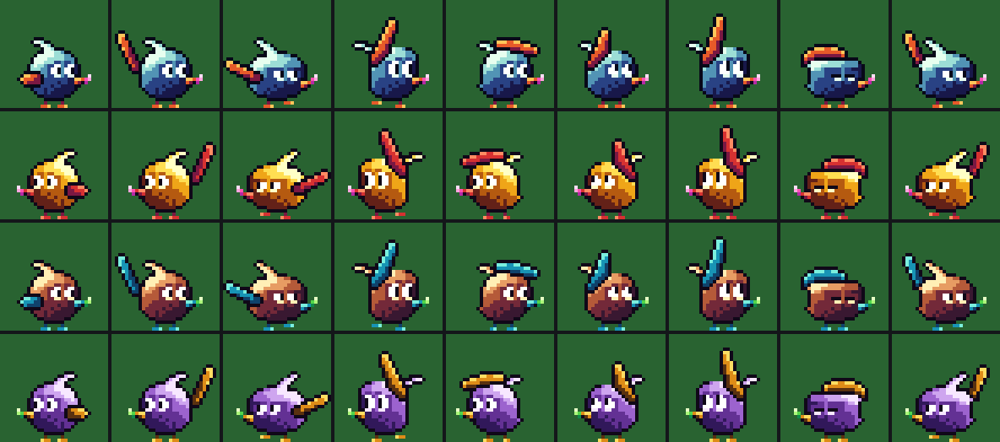
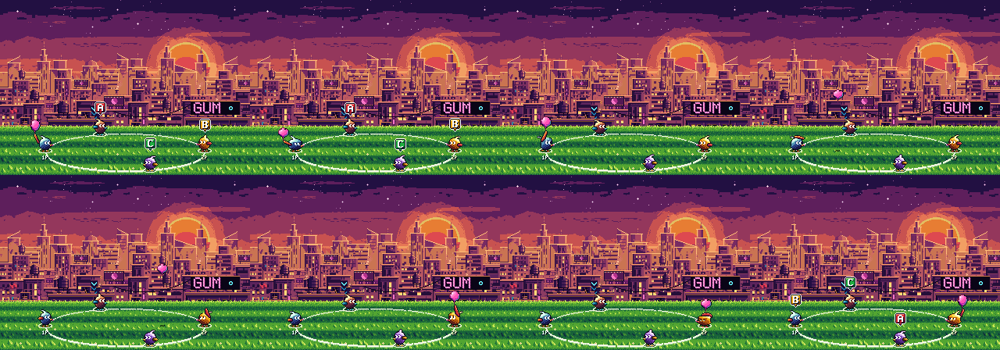
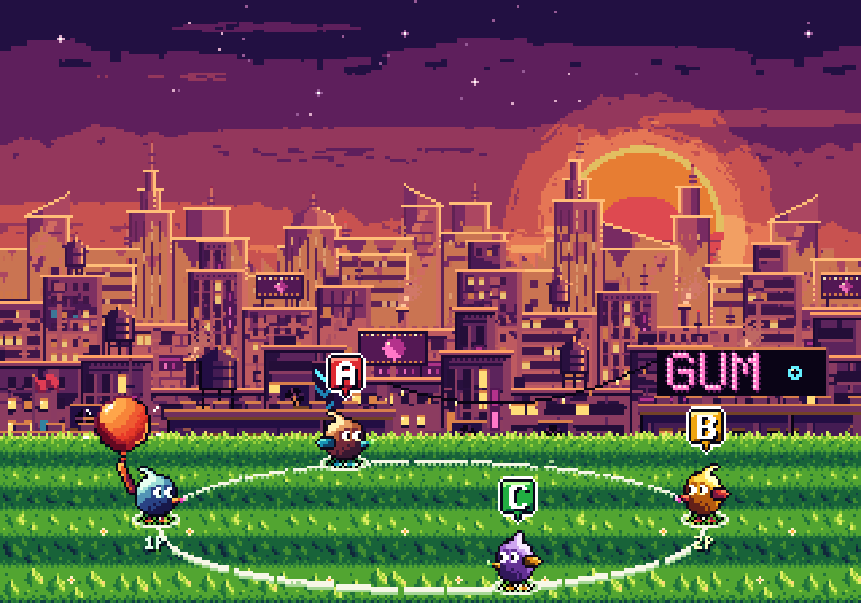
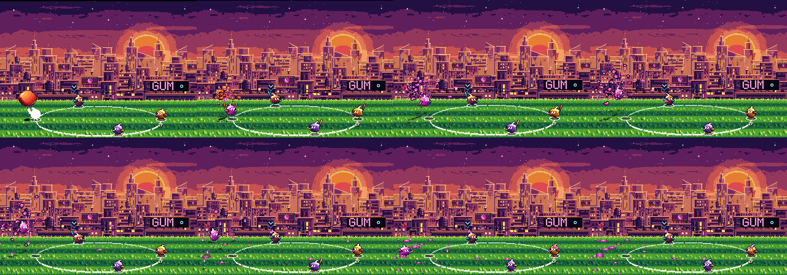
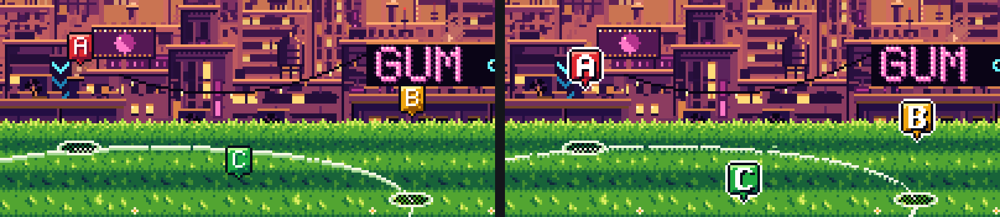
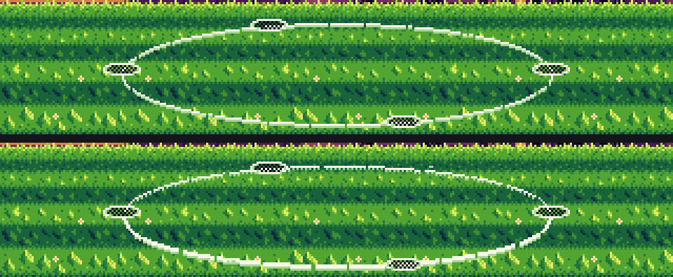
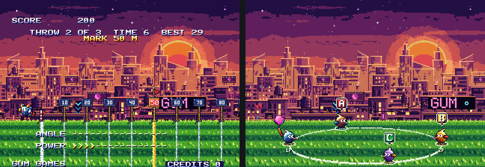

Toss Gum round 2: side-view throw and catch, hand ring, backed tags, fuller burst
Draft only, no game code. Old draft frames on the left, new on the right. Numbers: numbers.txt, notes: README.md.
1. Pose sheet (4x)

Column 1: the game's idle frame. Then throw windup A (also the carry pose), windup B, release A, release B (follow through), catch reach A, reach B, absorb, recoil. Rows: 1P, 2P gold (mirrored), CPU1, CPU2 violet (mirrored). Mirror and palette cost no tiles.
New: 1P throws across to 2P with the poses; gum leaves the wing tip and lands on the wing tip.

New toss key frames, 1x.
4. Burst: old against new (3x)
Old: shreds 1 to 6 px, no shadows, nothing lands on other birds.

New: shreds up to 10 px, stretch at speed, tumble, shadows on the grass, landing splats with droplets, one shred sticks to each other bird, strands sag and snap.

New burst key frames, 1x.
5. Tags over the city: old against new (4x)

Left old, right new: white keyline, dark rim, bold letter with drop shadow.
6. Ring line: old computed against new hand-placed (3x)

Top old (ellipse equation), bottom new (typed row runs, near arc thicker, worn gaps typed per quadrant).
7. Scene against the in-game reference

Left: in-game Gum Fling dusk run-up. Right: Toss Gum scene with the carry pose.Scene, 3x.